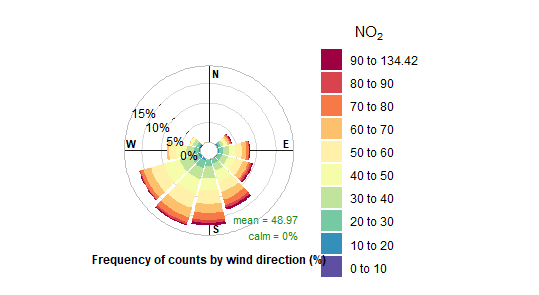
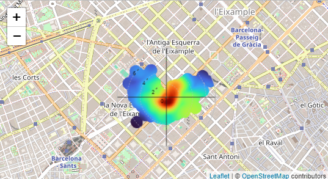

This graph shows how NO₂ levels change over time in Eixample.

This graph compares pollution values in different situations.

This visualization highlights important air quality patterns.

This graph presents NO₂ pollution levels measured in Eixample.

This graph relates pollution concentration with wind direction.

The polar plot shows pollution patterns during different hours and weather conditions.

This scatter plot shows the relationship between environmental variables.

This graph shows how wind conditions can influence NO₂ concentration.